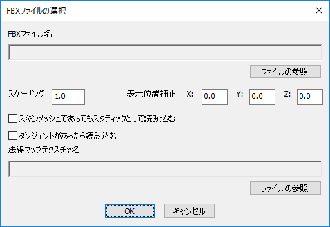
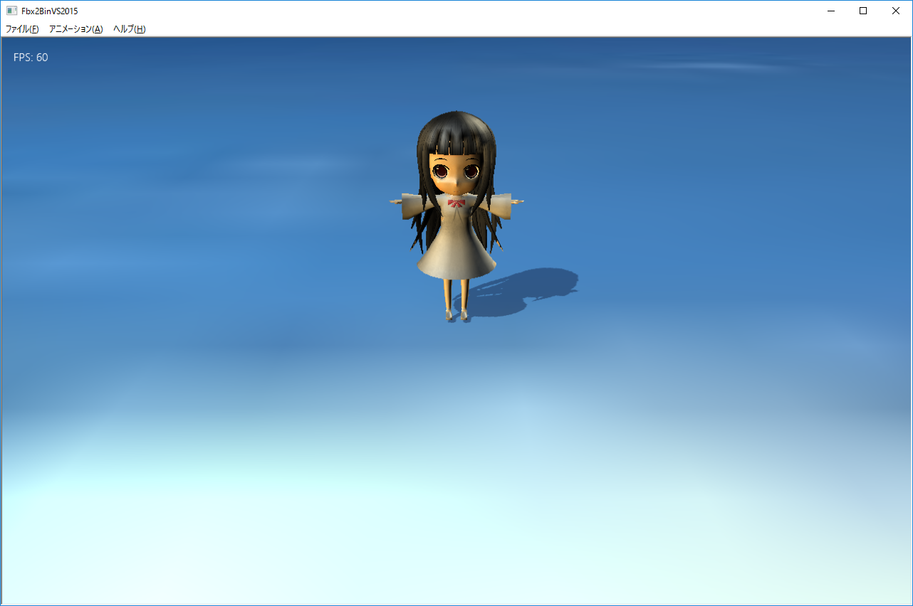
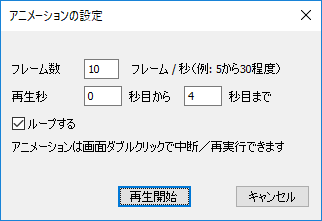
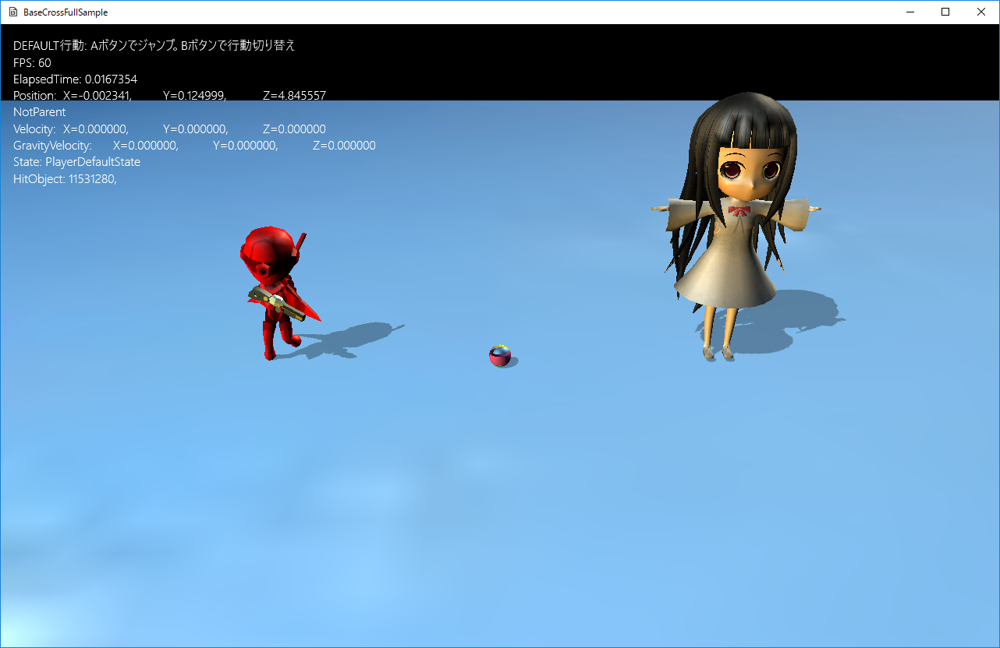

５．FBXモデル変換ツール（Fbx2BinVS2015）
５０２．タンジェントがついていないモデルのデータ変換
Fbx2BinVS2015でデータ変換できるFBXファイルは、以下のようなデータです。１、PNTフォーマットのスタティックモデル ２、PNTフォーマットのアニメーション付きモデル（ボーン付き） ３、PNTnTフォーマットのスタティックモデル（タンジェント付き） ４、PNTnTフォーマットのアニメーション付きモデル（タンジェント・ボーン付き）
またアニメーション付きモデルについてはつながったボーンである必要があります。詳しくは次項以降を参照ください。
PNTフォーマットのスタティックモデル
Fbx2BinVS2015にはいくつかのサンプルがあります。Fbx2BinVS2015\mediaディレクトリにありますが、まず、Chara1ディレクトリにあるスタティックモデルを読み込んでみます。ファイル・FBXファイルを開くで以下のようなダイアログが出ます。

図0502a
ここでファイルの参照をクリックしてFbx2BinVS2015\media\Chara1\Character_01.fbxを選んでみましょう。以下のような感じです。

図0502b
ここでスケーリングを0.01にしているのは、ゲームの単位系とモデルの単位系は必ずしも同じとは限らないからです。ゲームはBaseCrossの場合は1.0は1メートルです。しかし、モデルの場合1.0が1センチのつもりで作成されているかもわかりません。本当であれば、モデル作成する前に合わせておくのが望ましいです。読み込むと以下のような画面が現れます。

図0502c
このモデルはアニメーションもしないし、法線マップ（タンジェント）も実装しないスタティックモデルです。アニメーションメニューを開いても選択できません。
このFbx2BinVS2015で読めるFBXファイルはいくつかの制約があります
１、インデックスごとに頂点が必要 ２、1つの頂点に設置できる法線は一つ ３、複数のテクスチャは使用できるが、マテリアルを分ける必要がある。
それでは、.bmfファイルを保存してみます。ファイル・バイナリファイルの保存で以下のダイアログが出ます。

図0502d
ここでOKをクリックすればFBXファイルと同じディレクトリに.bmfファイルが保存されます。PNTフォーマットのアニメーション付きモデル（ボーン付き）
続いてボーン付きモデルについて説明します。上記の要領でFbx2BinVS2015\media\Chara_R\Chara_R.fbxを開いてみましょう。スケーリングは上記同様0.01です。以下の画面が出ます。

図0502e
今度は左上に0.000000という数字とANIME: STOPと出ています。ここで、アニメーション・FBXファイルを動かすを選択してください。すると以下のダイアログが出ますので、以下のような設定をします。

図0502f
ここでの設定の意味ですが、フレーム数というのは1秒当たりのサンプリングする値です。これはFBXファイル作成時に合わせるのもいいですが、書きだすフレーム数と連動します。FBXから.bmfへのデータ変換はサンプリングという考え方で変換します。つまり、1秒のうち、ボーンの行列をいくつサンプリングするかという考え方です。当然細かいほうがFBXを作成した内容に近くなります。
しかし、実際にゲームでは必ずしも細かいほうが良いとは限りません。スピード感を出すゲームであればサンプル数は少なくして再生速度も速くすることでコミカルなあるいはスピード感のある演出が可能ですしメモリも圧迫しません。
そのあたりはグラフィッカーと協議の上決めるといいでしょう。
話は戻りますが、ここでの設定は10フレーム/秒で4秒間ですから、サンプル数は40個になります。1つのサンプルにはボーン行列の配列になりますので、アニメーションデータ量は40×ボーン数×行列のサイズになります。
このダイアログで再生をクリックするとアニメーションが再生されます。左上に現在再生されてる秒が表示されます。画面をダブルクリックすると停止・再生を繰り返します。
アニメーションに対する制限は1ラインで作成するということです。FBXでは複数のアニメーションラインを設定できますが、Fbx2BinVS2015では対応されてません。
では待機、歩くといったアニメーションの違いはどう設定するかということですが、1ライン中の何秒目から何秒間は歩きのような関係になります。こちらはゲームで使用するときにアニメーション設定というのを行いますので、つながっていてもいいことになります。
ここで紹介したサンプルも、いくつかのアニメーションが連続して入っています。
それではアニメーション付きモデルの保存をしてみましょうファイル・バイナリファイルの保存で保存ダイアログが出ます。ここで出てくるサンプリングは再生時のフレーム数と同じです。また保存する秒数も再生秒数と同じです。変更する場合は内容を変更してください。

図0502g
OKでFBXと同じディレクトリに.bmfファイルを保存します。.bmfファイルの表示
このあと、作成した.bmfファイルをゲームで表示したサンプルはFullSample502というサンプルです。起動すれば以下の画面が現れます。実装方法はFullSample404を参考にしてください。以下が実行画面です。

図0502h
ただ1点、このサンプルはツールで作成したモデルの表示の参考のため、mediaディレクトリにリソースが保存してあります。また、メッシュのリソース化はScene.cppに記述がありますが、以下のように記述があります。
void Scene::CreateResourses() {
wstring DataDir;
//サンプルのためアセットディレクトリを取得
App::GetApp()->GetAssetsDirectory(DataDir);
wstring strTexture = DataDir + L"trace.png";
App::GetApp()->RegisterTexture(L"TRACE_TX", strTexture);
strTexture = DataDir + L"sky.jpg";
App::GetApp()->RegisterTexture(L"SKY_TX", strTexture);
//データディレクトリを取得
wstring MediaDir;
App::GetApp()->GetDataDirectory(MediaDir);
//スタティックモデルのリソース
auto StaticModelMesh
= MeshResource::CreateStaticModelMesh(MediaDir + L"Chara1\\", L"Character_01.bmf");
App::GetApp()->RegisterResource(L"MODEL_MESH", StaticModelMesh);
//ボーンモデルのリソース
auto BoneModelMesh
= MeshResource::CreateBoneModelMesh(MediaDir + L"Chara_R\\", L"Chara_R.bmf");
App::GetApp()->RegisterResource(L"BONE_MESH", BoneModelMesh);
}